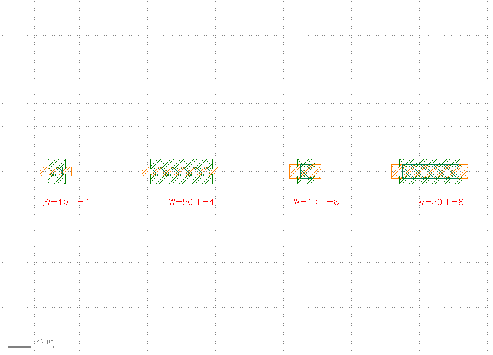
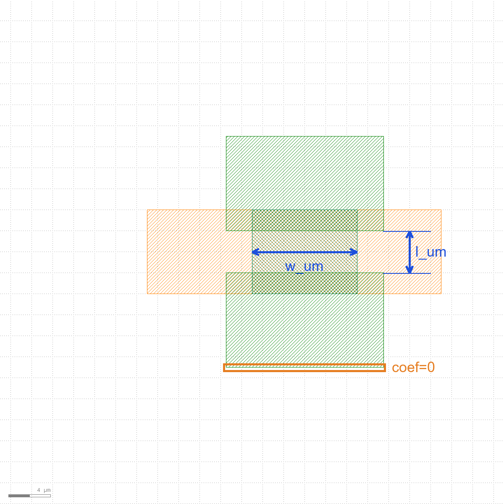
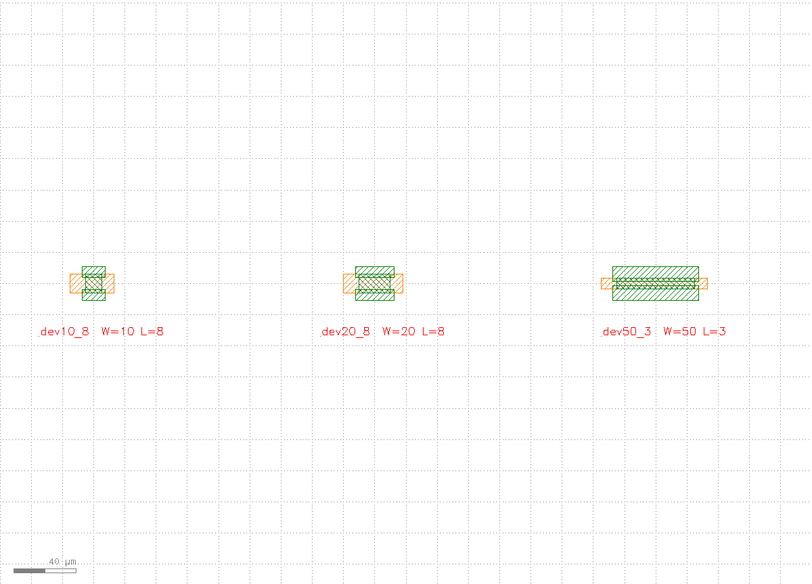
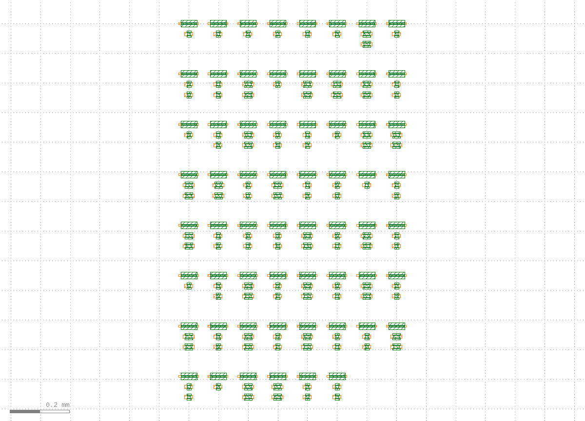
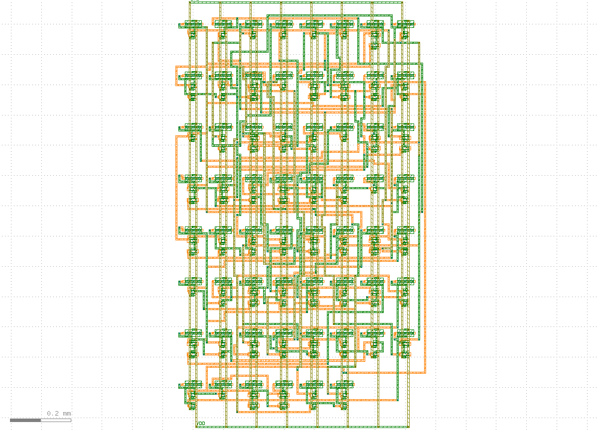
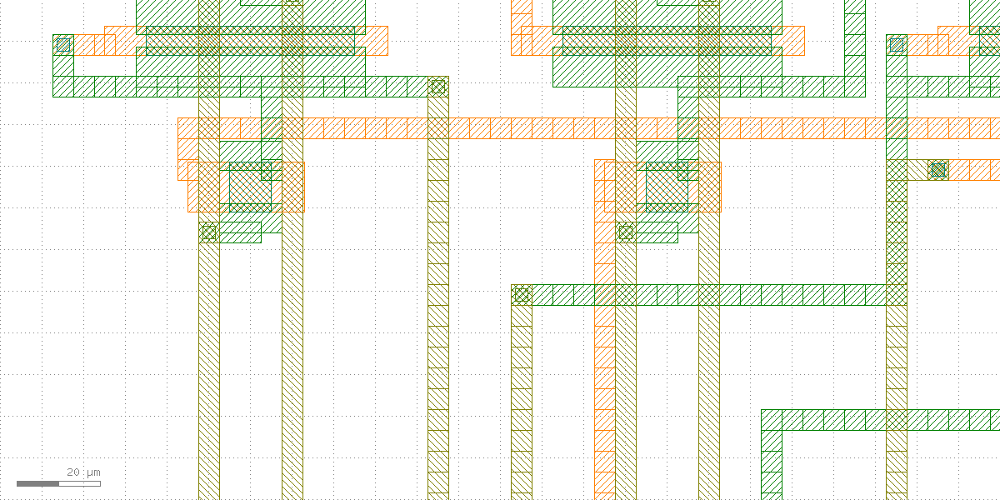
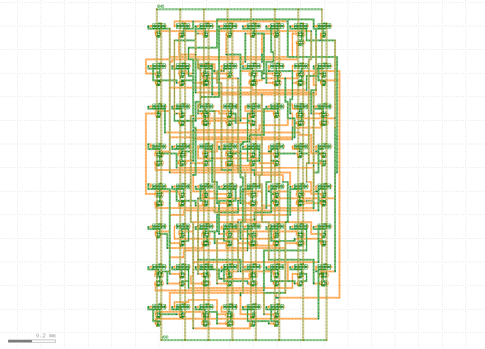
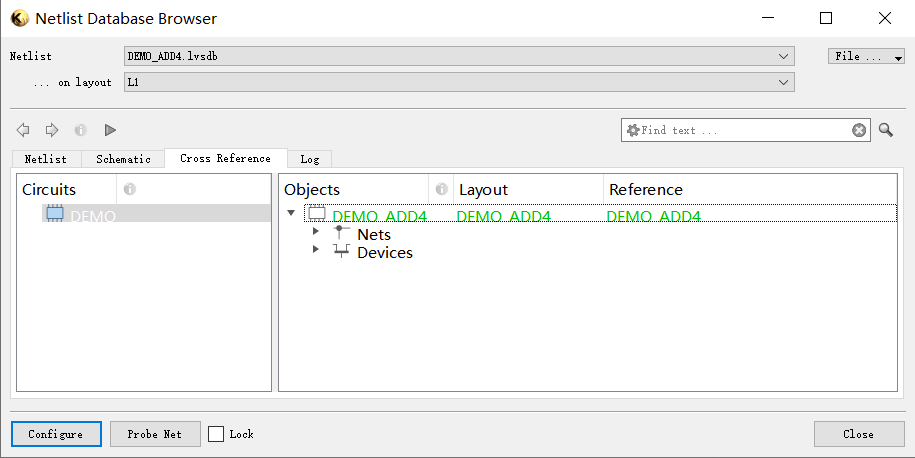

Prerequisites
- Starter: it's already in the
klink init <proj>scaffold (example_template/digital/fit_device_pnr_lvs.py); it needs a running KLayout session (it does live P&R+LVS). - KLayout running with the klink plugin loaded (point
--portat your live session). - The whole flow is one command:
python example_template/digital/fit_device_pnr_lvs.py --port <session-port>(add--draw-onlyto draw the devices and skip P&R/LVS; from a repo clone you can also runpython -m examples_klink.public.demos.digital.fit_device_pnr_lvs --port <session-port>).
_device_boxes() for boxes harvested from your own hand-drawn cells and the flow doesn't change by a single line.1Exemplar geometry: start from one device
Everything starts from "the device you already know how to draw". An exemplar is the same device drawn at several parameter points — each exemplar is a set of role-named boxes (role → layer + bbox). Here it's a synthetic back-gate-style device with 4 roles on 3 process layers: channel (103/0), source/drain (104/0, protruding past the channel in x), and a back-gate plate (101/0, covering the channel and extending left for the gate lead). Two parameters drive the geometry: w_um (channel width) and l_um (source–drain gap):
SX, OUTER, CY, PL, PR = 2.5, 11.0, 2.0, 10.0, 8.0 # OUTER = FIXED S/D outer edge
def _device_boxes(W, L):
return {
"channel": ("103/0", [-W/2, -(CY + L/2), W/2, CY + L/2]),
"source": ("104/0", [-(W/2 + SX), -OUTER, W/2 + SX, -L/2]),
"drain": ("104/0", [-(W/2 + SX), L/2, W/2 + SX, OUTER]),
"gate_plate": ("101/0", [-(W/2 + PL), -(CY + L/2), W/2 + PR, CY + L/2]),
}
EXEMPLAR_SIZES = [(10, 4), (50, 4), (10, 8), (50, 8)] # span both W and LThe 4 exemplar points deliberately span both parameter axes (W varies, L varies, both vary) — the fitter is a regression, so the exemplars must vary each parameter independently, or it refuses with an explicit error ("collinear parameters"). In a real project these boxes come from your existing layouts: read them out of a few hand-drawn device cells at different sizes with shape.query.

101/0), green = source/drain (104/0), dense center hatch = channel (103/0). W drives the horizontal dimensions, L drives the source–drain gap.2Fitting: exemplars → parametric model
The fitter (klink.domains.structdevice.pcell_fitter) regresses every box edge (x1/y1/x2/y2) of every role against the parameters (least squares) and classifies each edge — linear (cleanly driven by the parameters), constant (doesn't move), or unexplained (the data doesn't justify a law; you decide: a new parameter, or pin it to a constant). The workflow is: analyze to screen, read decisions_needed, confirm the model, then fit_table:
from klink.domains.structdevice import pcell_fitter as fitter
exemplars = [{"params": {"w_um": W, "l_um": L},
"roles": {r: {"layer": ly, "box_um": bx}
for r, (ly, bx) in _device_boxes(W, L).items()}}
for W, L in EXEMPLAR_SIZES]
report = fitter.analyze(exemplars, ["w_um", "l_um"])
print(report.summary())
# parameters: ['w_um', 'l_um']
# edges: 14 linear, 2 constant, 0 unexplained
table = fitter.fit_table(
report, style="default",
sample_order=[{"w_um": W, "l_um": L} for W, L in EXEMPLAR_SIZES],
param_units={"w_um": "um", "l_um": "um"})This run's actual screening: of 16 edges, 14 linear, 2 constant, 0 unexplained. The 2 constant edges are exactly the device model's "S/D outer edge fixed at ±11 µm" convention — the fitter discovered it from the data. The product is a klink_fitted_device_pcell_v2 fit table: one linear law base + Σ coef[p]·param[p] per edge (in dbu), e.g. the channel's left edge:
"channel": {"layer": "103/0", "edges": {
"x1": {"kind": "parametric", "base": 0, "coef": {"w_um": -500, "l_um": 0}},
...
}},
"source": {"layer": "104/0", "edges": {
"y1": {"kind": "parametric", "base": -11000, "coef": {"w_um": 0, "l_um": 0}}, # constant edge
...
}}
w_um, source–drain gap l_um), orange box = the source outer edge the fitter classified as constant (coef=0). With this table the device draws at any parameter values, not just the 4 exemplar points.3Register a PCell, draw variants
Hand the fit table to pcell.register_fitted on the KLayout plugin side and you get a real PCell (library klink_structdevice): parameters in, geometry out. The table binds at registration, so a drawn instance carries only its geometry parameters. Draw 3 variants at different parameters to prove the parametrization is real:
c.call("pcell.register_fitted", {"name": "demobg", "fit_table": FIT}) # FIT = fit-table json path
items = [{"pcell": "demobg", "library": "klink_structdevice",
"params": {"w_um": W, "l_um": L, "style": "default"},
"position_um": [i * 180.0, 0.0]}
for i, (W, L) in enumerate([(10, 8), (20, 8), (50, 3)])]
c.instance_insert_pcell_many("FIT_VARIANTS", items)Note that only (10, 8) is an exemplar point: W=20 is an interpolation inside the sampled range, and L=3 lies outside the sampled range [4, 8] — an extrapolation. The linear model doesn't vouch for parameters beyond the sample range (process rules are unknown there), but the geometric law still applies, and the LVS below proves all three sizes work.

demobg PCell at three parameter sets: dev10_8 (exemplar point), dev20_8 (interpolation), dev50_3 (extrapolation). The geometry scales correctly with the parameters — the parametrization was fitted, not hard-coded.DEVICES table used by P&R below maps each device key to {params, pcell, library, style, fit_table} — devices are N-ary (params is an arbitrary dict; no W/L assumption), and klink presets none of it. Even each device's terminals (G/S/D position, orientation, layer) are computed from the fit table and stored in the example's own device_geom.json.4Place many instances from a netlist
Now scale the single device up to a circuit. The input is a device-level netlist (the demo bundles add4.devnet.json, a 4-bit adder: 62 gates, 173 device instances, 96 nets); the process stack is the example-owned PUBLIC_PROCESS (3 routing layers + 2 via pairs). Rows, columns and row pitch are derived from demand, not magic numbers:
from dataclasses import replace
from klink.routing.grid.process_profile import ProcessProfile
from klink.routing.grid.floorplan import derive_grid, derive_row_pitch
from klink.domains.structdevice import layout_engine as eng
PUBLIC_PROCESS = ProcessProfile( # every number example-owned; copy + edit for YOUR process
routing_layers=("101/0", "104/0", "106/0"),
gate_layer="101/0", sd_layer="104/0", channel_layer="103/0",
vias=(("101/0", "102/0", "104/0"), ("104/0", "105/0", "106/0")),
layer_directions={"101/0": "V", "104/0": "H", "106/0": "V"},
wire_width_um=5.0, wire_clear_um=2.0, prl_spacing_um=10.0, prl_length_um=15.0,
via_pad_um=5.0, litho_tol_um=1.0, y_step_um=30.0, col_pitch_um=100.0, margin_um=60.0)
P = replace(PUBLIC_PROCESS, wire_clear_um=5.0, grid_pitch_um=10.0,
col_pitch_um=100.0, y_step_um=35.0) # density knobs, also example-owned
nl = json.loads(Path("examples_klink/public/demos/digital/add4.devnet.json").read_text())
raw = eng.load_device_geom(GEOM) # device geometry table (terms/pads/body), generated from the fit table
_, _, terms = eng._geom_tables(raw)
rows, cols = derive_grid(len(nl["groups"])) # 62 gates -> 8 x 8
rp = derive_row_pitch(nl, rows, cols, terms, y_step=P.y_step_um,
width_um=P.wire_width_um, wire_clear_um=P.wire_clear_um,
via_pad_um=P.via_pad_um, n_horiz_layers=3) # -> 170.0 um
placement = eng.place_grid(nl, rows, cols, profile=P, row_pitch=rp) # 173 instancesderive_row_pitch sets row pitch = device stack height + routing channel, with the channel sized as peak crossing demand ÷ number of routing layers — more layers, narrower channel, smaller layout. The placement itself is one batch instance.insert_pcell_many call (see the batch-RPC rule).

derive_row_pitch reserved; nothing is wired yet.5Declare nets + detailed routing
The connectivity intent comes from the netlist: each net declares which device terminals belong to one electrical node. This declaration is both the router's input and the baseline LVS reconciles against in stage ⑥:
declared = [{"net": n["net_id"], "terminals": n["terminals"]} for n in nl["nets"]]
# e.g. {"net": "$abc$217$new_n15", "terminals": ["X1.S", "X1.G", "X2.D", "X102.G"]}
cut_layer = {tuple(sorted((lo, up))): P.cut_layer(lo, up) for (lo, _c, up) in P.vias}
ok, info, _ = eng.route_and_draw_flexdr(
c, "DEMO_ADD4", nl, placement, profile=P, layers=list(P.routing_layers),
vias=P.via_rules(), cut_layer=cut_layer, geom_path=GEOM,
devices=DEVICES, use_rust=True)
# FlexDR 3.7s ok=True routed=94/94 markers=0Of the 96 nets, VDD/GND go to the power grid (PDN: 104/0 rails + 106/0 straps, 166 PDN vias this run); the remaining 94 signal nets are routed by the FlexDR detailed router across the 3 layers (200 signal vias this run), with terminal access points and via rules all coming from the profile and the harvested device geometry. Only routed=94/94 with markers=0 (zero DRC violations) proceeds; a routing failure returns instructions (which net, why, which floorplan knob to change), not a bare error.

104/0) run in the row channels, orange (101/0) and gray (106/0) verticals cross rows, and the PDN ring surrounds the block.
6Live LVS: declared vs extracted
The last step is not "it looks connected" — KLayout's native connectivity extraction is the referee. lvs_check extracts the nets from the real drawn geometry (in-layer continuity + vias across layers), reconciles them one by one against the declared nets from stage ⑤, then runs a device-level netlist compare:
from klink.domains.structdevice.orchestrators import lvs_check
from klink.domains.structdevice.recipes import geom_terminal_provider
# device_terms = absolute terminal coordinates per instance (placement offset
# + terminal centers from terms; see the demo source for the one-line dict)
res = lvs_check(c, "DEMO_ADD4", declared=declared, mode="lvsdb",
connectivity=P.connectivity_spec(), # derived from the SAME profile
terminal_provider=geom_terminal_provider(raw),
placement=placement, device_terms=device_terms)
# LVS ok=True match=True devices=173mode="lvsdb" also writes a geometry-linked native .lvsdb — open it in KLayout's Netlist Browser for two-way cross-probing between layout and netlist. Note the connectivity rules LVS uses (which layers conduct, which are vias) are derived by P.connectivity_spec() from the same profile — router and referee read one process declaration, but the referee is KLayout's native extractor, not the router grading itself.

view.zoom_fit): DEMO_ADD4 after LVS match=True. The outer PDN rails carry GND/VDD text labels — with no pads, the peripheral rails ARE the power ports.Verify, don't just look
As the core concepts says, screenshots are for humans. The complete output of this run against a live KLayout:
=== fitter screening ===
parameters: ['w_um', 'l_um']
edges: 14 linear, 2 constant, 0 unexplained
drawn DEMO_DEVICES (synthetic fitted device)
[public] FlexDR 3.7s ok=True routed=94/94 markers=0
[public] LVS ok=True match=True devices=173
RESULT: PASS (synthetic fitted device: fit -> P&R -> LVS match)Four structural quality gates, all required: fitter screening 0 unexplained (every edge accounted for); routing routed=94/94 with markers=0 (everything routed, zero DRC violations); LVS match=True (the netlist extracted from the 173 drawn devices matches the declared one). If any gate fails, the demo exits non-zero — there is no "close enough counts as done".

match=True: the DEMO_ADD4.lvsdb written by mode="lvsdb", opened in KLayout's Netlist Database Browser, with every net and device cross-referenced and matched (green). This is the native extraction behind the LVS ok=True match=True line above — the numbers are the verdict; this picture is just what that same verdict looks like to a person.Next steps
Make the flow yours: copy examples_klink/public/demos/digital/fit_device_pnr_lvs.py and swap three things — _device_boxes() (boxes read via shape.query from your own hand-drawn device cells), the layer numbers / widths / spacings in PUBLIC_PROCESS, and the netlist. klink's mechanism layer needs no edits. If you're starting from zero, read the first batch's Hall bar tutorial first for the basic geometry-first loop. The next tutorial covers the probe-card padframe demo: the pad ring is fixed first and the circuit's P&R has to meet it.